Lectura ejecutiva
Las campañas con formulario generaron 9.927 leads atribuidos por Meta con una inversión de $45,92 millones en el periodo. El volumen diario subió en los primeros ocho días de noviembre y el costo promedio bajó; no obstante, el resultado es una mezcla de programas, anuncios y presupuestos diferentes.
238 leads por día
Octubre completo: 7.384 leads · $35,38 M · $4.791 por lead
318 leads por día
1 al 8 de noviembre: 2.543 leads · $10,55 M · $4.147 por lead
El promedio diario creció 33,5% y el costo por lead bajó 13,5%. La inversión diaria también subió, de $1,14 M a $1,32 M. La comparación usa promedios diarios porque octubre tiene 31 días y el corte de noviembre, ocho.
La mejora no fue uniforme. Administrativo Bello y Asesor Comercial redujeron su costo de forma marcada; Soporte se mantuvo cerca de $6.950 y Suministros en Rionegro alrededor de $8.700 en noviembre. Primera Infancia arrancó con volumen y costo bajo, aunque necesita validación comercial.
De dónde vinieron los 9.927 leads
Composición de los leads de formulario durante todo el periodo.
Programas 8.136Charlas 932General Empresas 859
Estas cifras agrupan programas, general y charlas con objetivo de leads; WhatsApp se lee aparte por tratarse de conversaciones. Los leads son acciones atribuidas en Meta, no personas únicas ni matrículas verificadas.
Qué ángulos movieron resultados
Clasificamos cada anuncio de programa una sola vez según su recurso principal observado: imagen con oficio y apoyo económico, video del programa, respaldo de una empresa o mensaje aspiracional. El texto puede combinar varias promesas. Las cifras siguientes mezclan programas: sirven para entender el conjunto, no para declarar que un formato o frase causó el resultado.
Volumen por enfoque · 1 al 8 de noviembre
Las barras muestran leads; el costo se presenta junto a cada resultado.
Oficio + apoyo en imagen
1.402 leads$3.970 por lead
Video de programa
489 leads$5.953 por lead
Empresa aliada + respaldo
318 leads$2.633 por lead
Futuro + apoyo económico
45 leads$3.455 por lead
| Contenido principal | Octubre
leads · costo | 1–8 noviembre
leads · costo | Lectura |
|---|
| Oficio + apoyo económico en imagen | 3.945 · $5.433 | 1.402 · $3.970 | El recurso dominante. Incluye Software, Comercial, Bello y otras líneas; la mezcla cambia entre meses. |
| Video de programa | 1.148 · $5.844 | 489 · $5.953 | Aporta volumen en Comercial, Soporte y Alimentos. Hay cambios de versión del video durante el periodo. |
| Empresa aliada + respaldo | 738 · $4.084 | 318 · $2.633 | Administrativo con EPM aporta 527 y 285 leads, respectivamente; no conviene extender ese resultado a todas las marcas aliadas. |
| Futuro + apoyo económico | 51 · $3.640 | 45 · $3.455 | Una pieza de Alimentos; señal favorable en ese programa, todavía sin comparación controlada. |
La dirección más consistente es mantener visible la combinación de programa, apoyo económico y experiencia. Para una siguiente prueba, conviene distinguir mejor las tareas del oficio y el respaldo concreto de la empresa, sin prometer beneficios no verificados.
Lectura por programa
Se muestra una pieza representativa por programa. Las cifras de cada encabezado corresponden al programa completo; las comparaciones dentro del texto agrupan versiones repetidas en conjuntos cuando comparten concepto. Octubre es el mes completo y noviembre corresponde al 1–8.
Costo por lead: evolución dentro de cada programa
Escala común, de $0 a $12.104. Una barra más corta indica menor costo; no indica calidad del contacto.
Octubre completo1–8 de noviembre
Administrativo · Medellín
Primera Infancia · Medellín
Alimentos y Bebidas · Medellín
Asesor Comercial · Medellín
Administrativo · Rionegro*
Soporte de Sistemas · Medellín
Suministros y Almacén · Rionegro
* Administrativo Rionegro registró solo cinco leads en octubre. Talento Humano no aparece en este gráfico porque no tuvo entrega en noviembre; se analiza abajo.
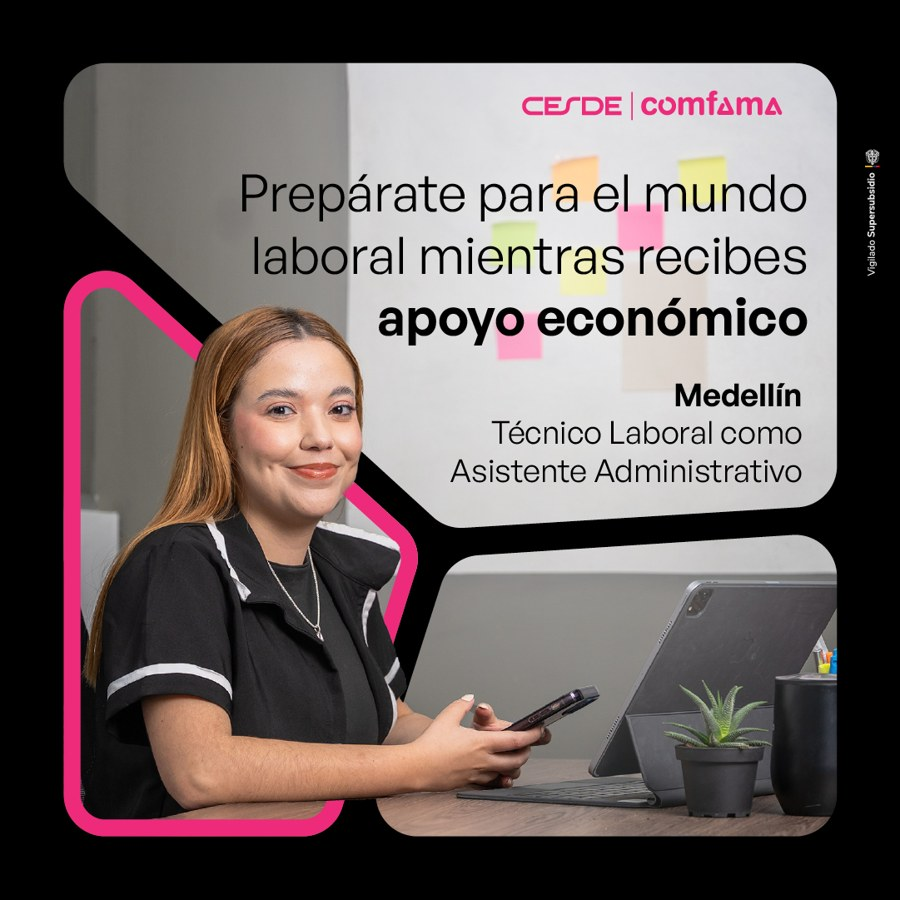
Administrativo · Medellín
Oct: 927 leads · $2.181 | Nov: 343 · $2.333
La pieza con EPM produjo 527 leads en octubre y 285 en noviembre, con costos de $2.163 y $2.331. La imagen de septiembre sin marca específica obtuvo costos muy similares: $2.204 y $2.333.
Mantener ambos enfoques. El respaldo de empresa funciona en esta línea, pero no podemos separar el efecto de la marca del resto de la pieza y la audiencia.
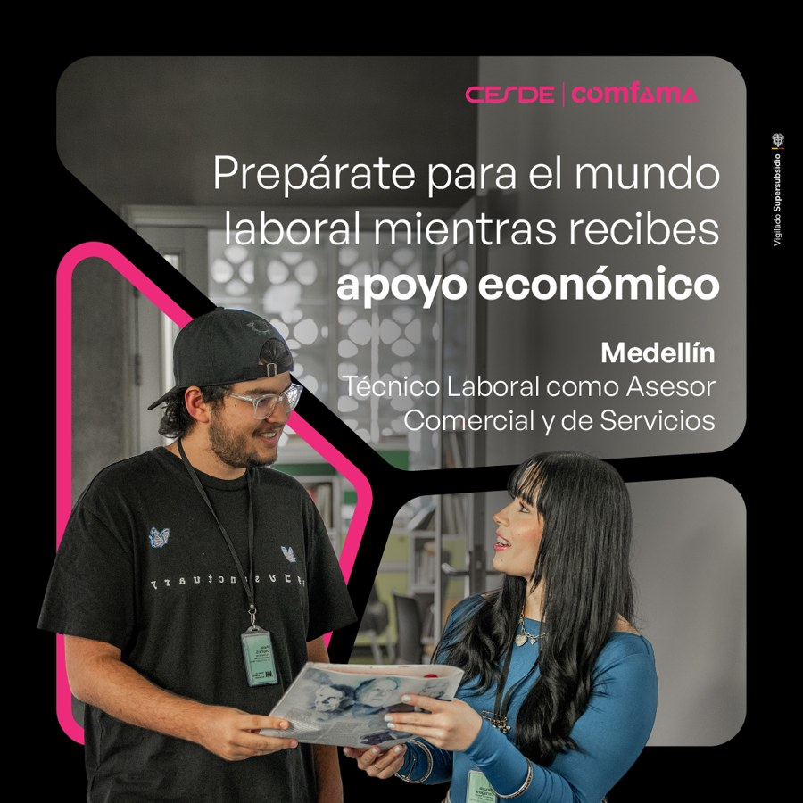
Asesor Comercial · Medellín
Oct: 935 leads · $6.960 | Nov: 373 · $4.299
En noviembre, la imagen de septiembre generó 130 leads a $3.582; el anuncio de video sumó 191 a $4.764. En octubre la imagen también tuvo menor costo, aunque el video aportó volumen.
Priorizar la imagen y conservar el video como comparación. Validar calidad en CRM; el identificador del video cambió el 30 de octubre y no permite asumir un archivo idéntico durante todo el mes.
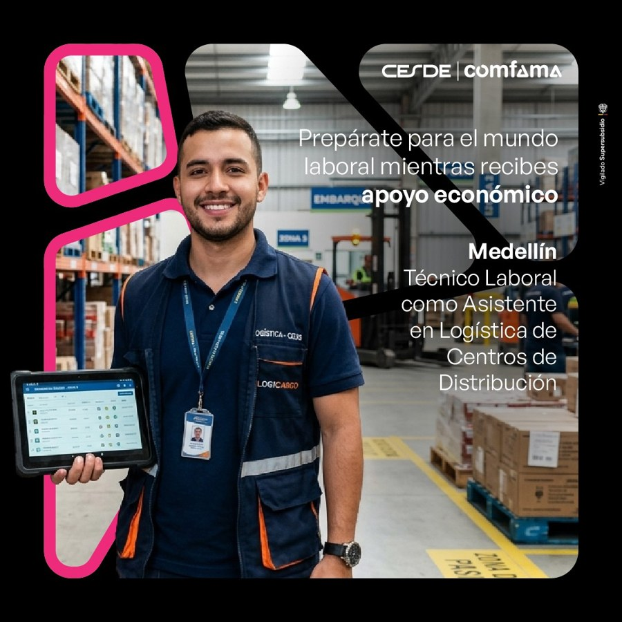
Logística · Medellín
Oct: 766 leads · $4.492 | Nov: 354 · $3.910
La imagen de julio aportó 639 leads a $4.389 en octubre y 297 a $3.765 en noviembre. Los dos videos de septiembre reunieron 56 leads a $4.547 en noviembre.
Mantener la imagen como base. Probar videos que hagan más tangible la coordinación y el trabajo en almacén, sin retirar los actuales solo por una comparación no controlada.
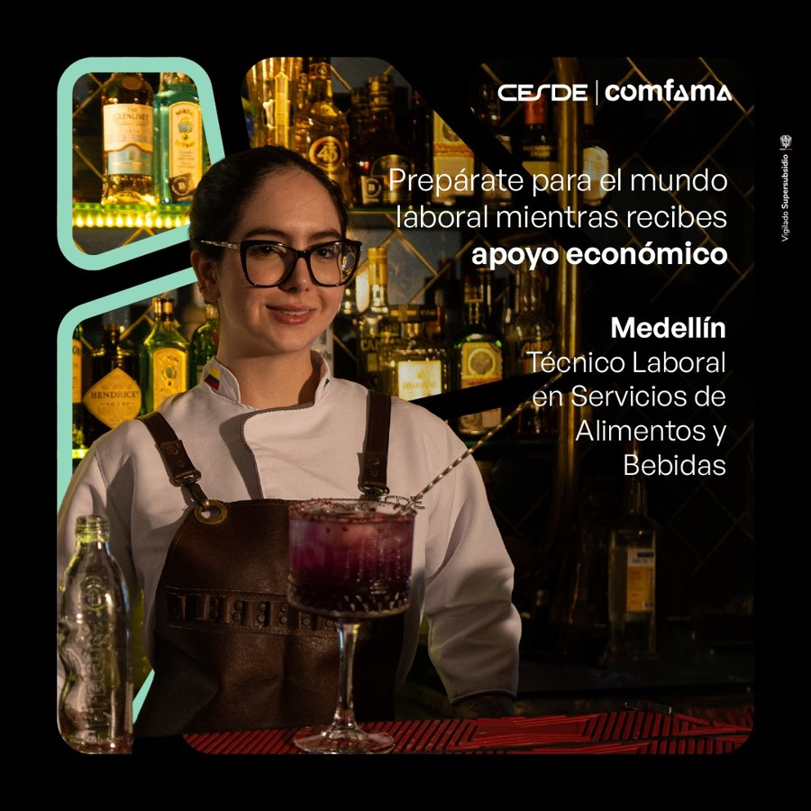
Alimentos y Bebidas · Medellín
Oct: 849 leads · $4.042 | Nov: 327 · $4.107
La imagen de julio generó 516 leads a $3.880 en octubre y 193 a $3.811 en noviembre. El video aportó 223 y 78 a costos de $4.614 y $5.100. La pieza aspiracional de futuro sumó 45 leads en noviembre a $3.455.
Mantener la imagen principal. Seguir probando el mensaje aspiracional y evaluar si el video compensa su mayor costo con mejores contactos.
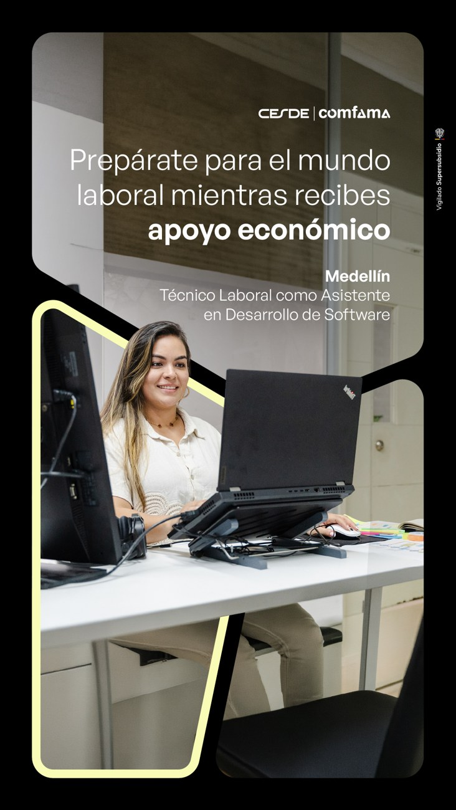
Desarrollo de Software · Medellín
Oct: 1.054 leads · $6.195 | Nov: 179 · $5.990
Las dos réplicas de la pieza de octubre sumaron 673 leads a $5.927 en octubre y 158 a $5.918 en noviembre. La imagen de julio tuvo 309 a $6.324 en octubre; en noviembre solo reunió 19.
Mantener el concepto de octubre. La pieza anterior tiene una muestra reciente menor; no conviene declarar una mejora causal ni sacar conclusiones por formato.
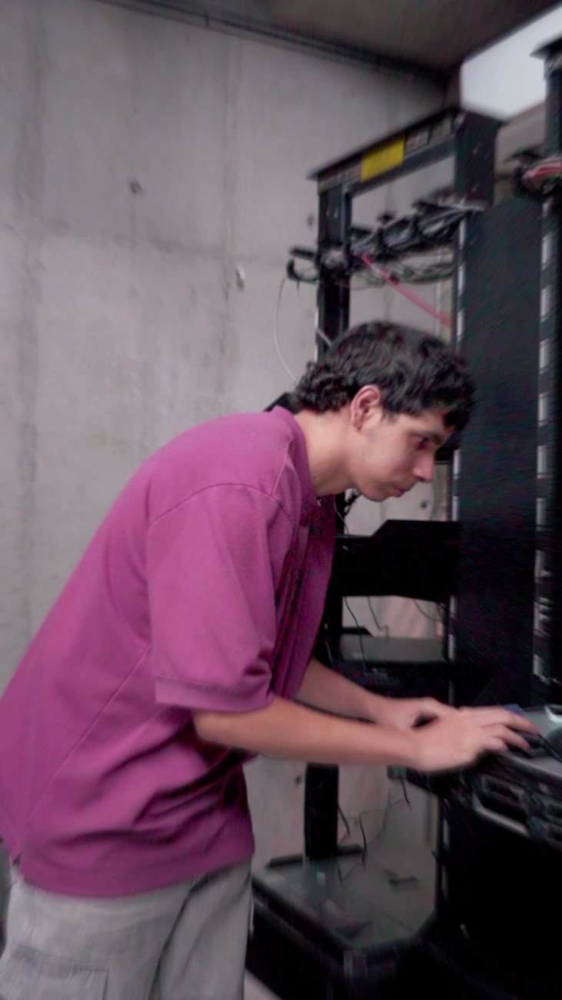
Soporte de Sistemas · Medellín
Oct: 540 leads · $6.962 | Nov: 118 · $6.950
En octubre, el anuncio de video tuvo 396 leads a $5.882 frente a 144 a $9.932 de Réditos. En noviembre, el video registró 96 a $7.279 y Réditos 22 a $5.518: la relación se invirtió con una muestra menor para Réditos.
Mantener ambos en observación. El video cambió de identificador el 30 de octubre; comparar por periodos y validar calidad antes de retirar alguna versión.
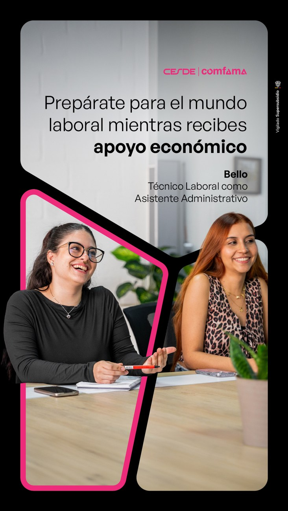
Administrativo · Bello
Oct: 543 leads · $7.418 | Nov: 239 · $4.065
La pieza de octubre, sumada entre sus dos conjuntos, produjo 542 leads a $7.399 en octubre y 237 a $4.043 en noviembre. La pieza del 30 de octubre solo acumuló tres leads en todo el corte.
Mantener el concepto principal. La nueva variante necesita más entrega; la caída de costo no prueba que el diseño por sí solo la haya causado.
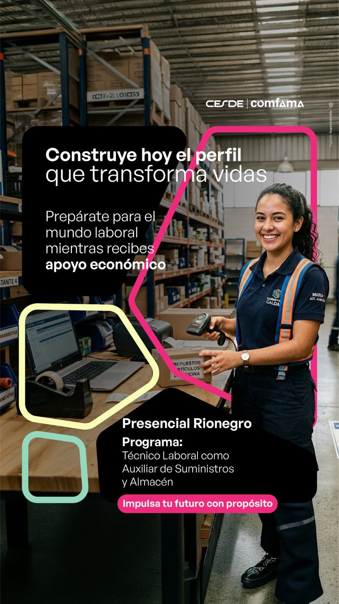
Suministros y Almacén · Rionegro
Oct: 147 leads · $8.894 | Nov: 76 · $8.707
En noviembre la imagen del 22 de octubre obtuvo 32 leads a $5.362 y el video, 44 a $11.140. Ambos tienen muestras todavía acotadas y condiciones de entrega distintas.
Revisar el video y sostener la imagen como referencia. Probar una variante más específica sobre inventario y suministros antes de tomar una decisión definitiva.
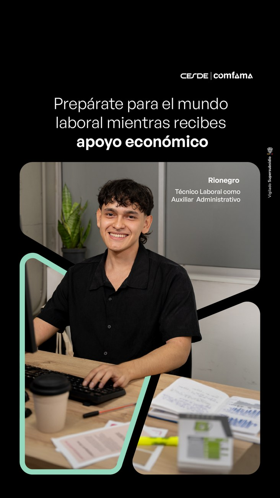
Auxiliar Administrativo · Rionegro
Oct: 5 leads · $12.104 | Nov: 59 · $5.583
En noviembre, la imagen sumó 36 leads a $5.033 y el anuncio de video, 23 a $6.445. El video cambió de identificador el 6 de noviembre.
Seguir comparando. El arranque de octubre tuvo solo cinco leads y no es una base suficiente para explicar la variación del costo.
Atención Integral a la Primera Infancia · Medellín
Oct: 42 leads · $2.208 | Nov: 186 · $2.603
La pieza de apoyo económico y formación para el cuidado infantil concentra toda la entrega de esta línea. Sumó 228 leads desde su lanzamiento del 30 de octubre.
Mantener y validar calidad. Es un arranque favorable en costo, pero todavía no hay una segunda creatividad con volumen para compararla dentro del programa.
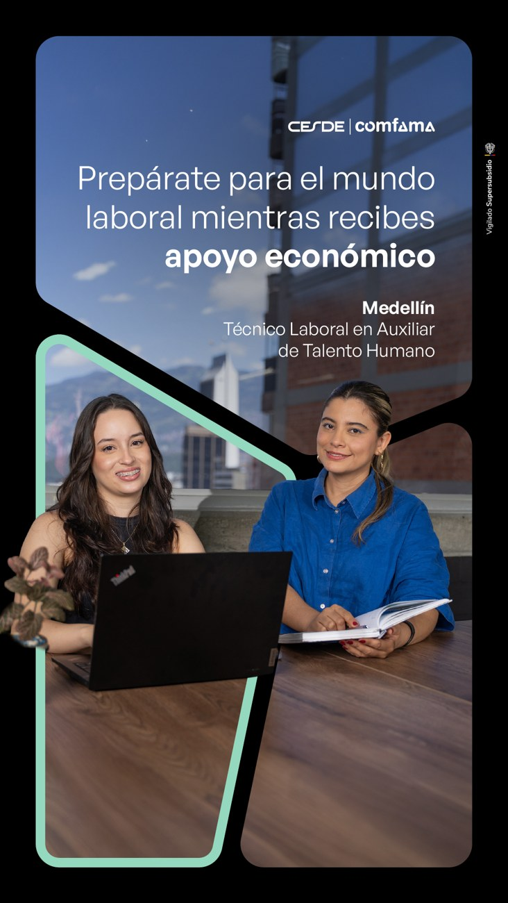
Talento Humano y Riesgo Laboral · Medellín
Oct: 74 leads · $2.206 | Nov: sin entrega registrada
En octubre el anuncio de video aportó 55 leads y las imágenes del 1 de octubre, 13 con poca inversión. No hubo gasto en los primeros ocho días de noviembre.
Sin conclusión nueva para noviembre. El bajo volumen de las imágenes no permite descartarlas, y el nombre actual del video no demuestra que esa versión exacta haya corrido todo octubre.
Generales y charlas
Estas iniciativas no dependen de un solo programa. Las dos primeras se leen en leads de formulario; WhatsApp se evalúa por conversaciones iniciadas y no se suma al costo por lead de formulario.
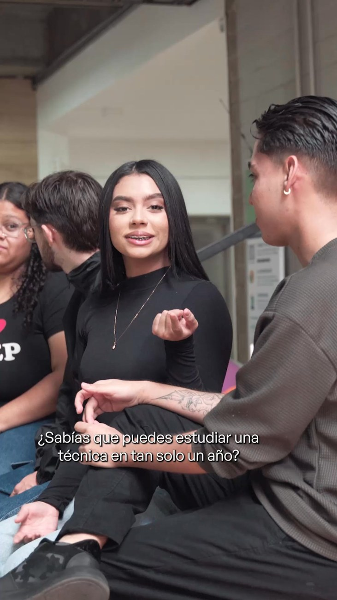
Charlas informativas
Octubre: 756 leads a $2.669.
Noviembre: 176 a $3.601.
+35% en costo por leadEl anuncio principal aportó 689 y 113 leads. El segundo reel pasó de 12 a 59. Mantener ambos para comparar y revisar la asistencia o avance comercial, no solo el registro.
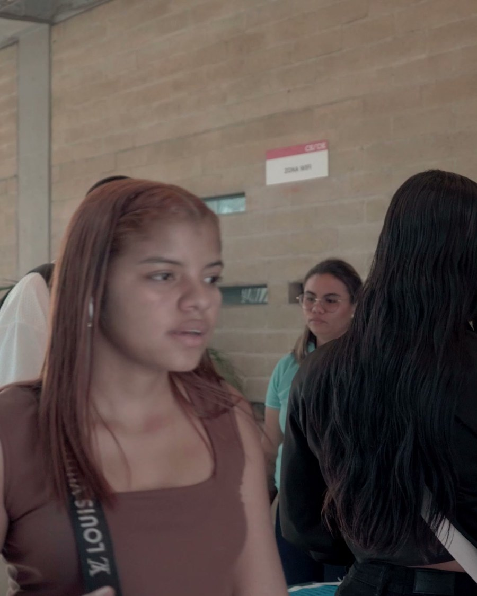
General Empresas
Octubre: 746 leads a $2.706.
Noviembre: 113 a $3.910.
+45% en costo por leadEl anuncio principal concentró 628 y 105 leads. Su mensaje combina patrocinio, experiencia y apoyo económico. Mantener la propuesta y renovar variantes ante el aumento de costo reciente.
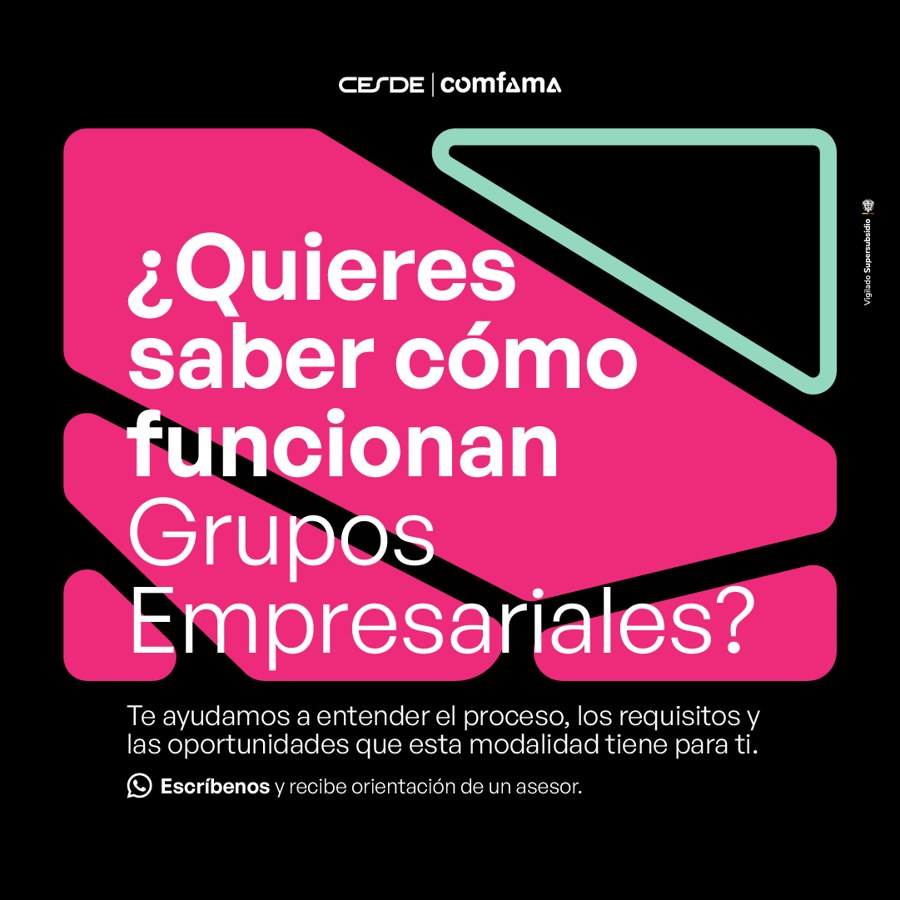
Orientación por WhatsApp
Octubre: 491 conversaciones · $3.767 por conversación.
Noviembre: 100 · $4.232.
+12% en costo por conversaciónEl anuncio reúne piezas sobre el proceso y sobre estudiar y trabajar; la imagen es un ejemplo y el resultado no está separado por pieza. Medir conversaciones útiles y atendidas antes de compararlo con los formularios.
Los anuncios de charlas y general tuvieron cambios de identificador de video el 30 de octubre y el 4 de noviembre. La cifra corresponde al historial del anuncio y no demuestra que el archivo visual haya sido idéntico durante todo el corte.
Qué conservar y qué probar
El desempeño favorece varias líneas, pero las decisiones creativas deben tomarse dentro de cada programa y no solo por el promedio general.
Prioridades para el siguiente corte
MantenerApoyo económico y oficio claro en Administrativo Medellín, Logística, Alimentos, Software y Primera Infancia. Conservar las empresas aliadas cuando corresponda.
Comparar y ajustarImagen y video en Comercial y Suministros; el cambio de relación entre piezas en Soporte; y el mayor costo reciente de generales y charlas.
Esperar más datosLa nueva variante de Bello, el arranque de Rionegro y las imágenes de Talento Humano aún no permiten declarar un ganador definitivo.
Siguiente contraste: calidad de contacto, avance comercial y matrícula por programa y formulario. Sin ese cruce, un costo bajo demuestra eficiencia de captación en Meta, no necesariamente mejor resultado comercial.
Fuente y límites
Fuente: Meta Ads, campañas de Empresas con gasto entre el 1 de octubre y el 8 de noviembre de 2026, inclusive; corte consultado el 9 de noviembre. Se incluyen campañas activas o pausadas si registraron inversión en la ventana. Moneda: pesos colombianos de plataforma.
Cálculo: se suma inversión y acciones lead atribuidas por Meta, y se divide el gasto entre los leads; no se suman acciones equivalentes duplicadas. WhatsApp se separa y usa conversaciones iniciadas. La misma pieza repetida en conjuntos se suma en su concepto; cuando existen dos videos diferentes agrupados se indica en el texto.
Interpretación: la clasificación de ángulos es editorial y usa el material y texto recuperados; cada anuncio se asignó a una familia principal. Los videos se revisaron a partir de sus fotogramas disponibles y textos, no mediante una transcripción completa del audio. En varios anuncios cambiaron los identificadores de video o creativo durante el periodo; los datos históricos pertenecen al anuncio y no garantizan que la pieza mostrada represente cada versión anterior. Diferencias de audiencia, fechas, inversión y formulario impiden inferir causalidad. No se contó con resultados de CRM o matrícula.